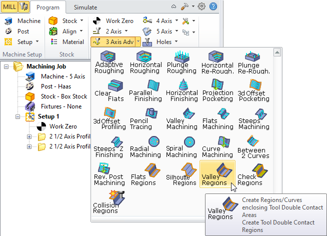
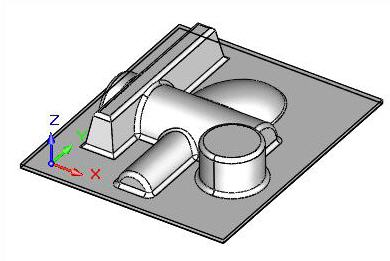
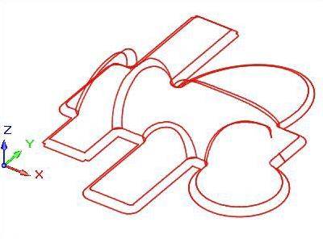
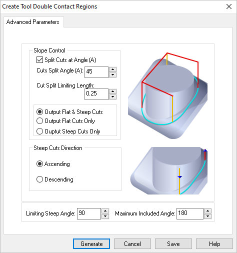
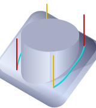
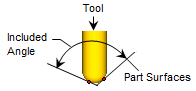

Available in: |
Xpress |
Standard |
Expert |
Professional |
Premium |
Valley Regions, 3 Axis
This method of creating machining regions generates the regions that determine the locations of all points where the tool is contacting the part-geometry in two or more tangential positions. Thus, the larger this angle the shallower this area. This angle has a range from 90 degrees to 180 degrees. At 90 degrees the tool is contacting at the side of a vertical wall. Close to 180 degrees the configuration of the two surfaces are quite shallow. The picture below shows how the included angle is computed.
 |
Example below shows the Valley Regions for the limiting steep angle =90 degree and maximum included angle of 180 degrees.  Valley Regions, limiting steep angle 90 degree, maximum included angle 180 degrees  Valley Regions, limiting steep angle 90 degree, maximum included angle 180 degrees |
 Dialog Box: Create Tool Double Contact Regions |
Split Cuts at Angle (A) If you check Split Cuts at Angle (A), then the cuts can be controlled based on the additional parameters that become active in this dialog. Cuts Split at Angle (A) For Cuts Split Angle (A), the cuts will be examined and split at this specified angle. This angle is computed with respect to the XY plane. Cut Split Limitation Length For Cut Split Limiting Length, in some cases the split angle could cause small cut segments to be output. This can happen when the pencil trace cuts trajectories bounce up and down the specified cuts split angle. If the split segment is below a certain length, you might not want to split the curve at that location. This parameter controls this Cut Split Limiting Length. Output Flat & Steep Cuts Selecting Output Flat and Steep Cuts allows the output of both the flat and steep cuts after the splitting is done at the split angle location.  Flat and Steep Cuts Output Flat Cuts Only Selecting Output Flat Cuts Only allows the output of the flat cuts only after splitting.  Flat Cuts Only Output Steep Cuts Only Selecting Output Steep Cuts Only allows the output of only the steep cuts after splitting.  Steep Cuts Only |
Ascending You can also control the direction of the steep cuts by choosing either Ascending or Descending. In Ascending all steep cuts will be ordered such that the cutter goes from low Z value to high while in Descending the opposite direction (high to low).
Descending You can also control the direction of the steep cuts by choosing either Ascending or Descending. In Ascending all steep cuts will be ordered such that the cutter goes from low Z value to high while in Descending the opposite direction (high to low).
|

Ignore cuts steeper than a certain angle. This is usually done to avoid cutting very steep vertical areas in the part. The default value is 90 degrees, which means all cuts will be output. Specify a lower value if you want to prevent cutting very steep areas. This angle is computed with respect to the XY plane. This allows you to control the output of cuts based on the Included Angle, is the angle between the two tangent lines at the bi-tangency points of the pencil traces.  Maximum Included Angle |